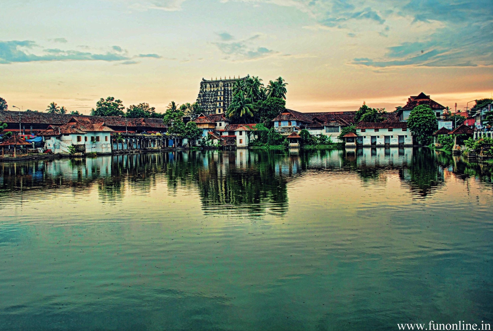
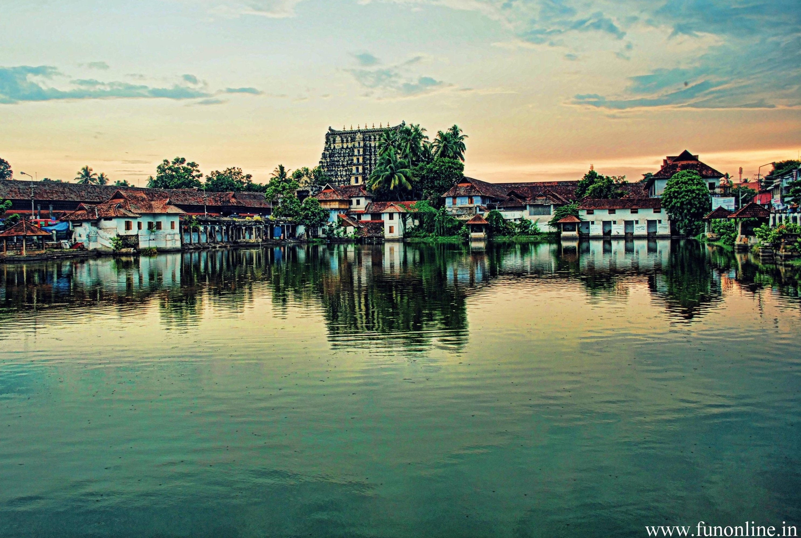

THIRUVANANTHAPURAM
Located in the southwestern tip of India, Thiruvananthapuram is bound by the Arabian Sea in the west and Tamil Nadu in the east. Named after Anantha Padmanabha or Lord Vishnu, the city is home to many ancient temples. But the landmark is the Sree Padmanabha Swamy Temple around which the city has been built on seven low hills. The wooded highlands of the Western Ghats in the eastern and northeastern borders give Thiruvananthapuram some ....
Read more... 

 -->
-->
KOLLAM
From Ibn Batuta to Marco Polo, legendary explorers have talked about the prominence of Kollam district for centuries. Blessed with a long coastline, it is the de facto leader of the cashew trade and processing industry in India. It is historically remembered as being among the most important ports which were part of the legendary Spice Trade. Over a third of its surface is covered by the great Ashtamudi Lake, the entrance ....
Read more...
ALAPUZHA
Referred to as the Venice of the East, Alappuzha has always enjoyed an important place in the maritime history of Kerala. Today, it is famous for its boat races, backwater holidays, beaches, marine products and coir industry. Alappuzha Beach is a popular picnic spot. The pier, which extends out to the sea here, is over 137 years old. Entertainment facilities at the Vijaya Beach Park add to the attraction of the beach. There is also...
Read more...
PATHANAMTHITTA
A hilly province of pristine splendour, the district of Pathanamthitta is hailed as the headquarters of pilgrim worship in Kerala. Three rivers course through its prosperous terrains comprising natural divisions of the lowlands, the midlands and the highlands. Interspersed with temples, rivers, mountain ranges and coconut groves...
Read more...
KOTTAYAM
Kottayam district is famous for its rich heritage and literary tradition. It is renowned for its spice and rubber trade. Cradled by the backwaters and the Western Ghats, it is epitomised by its stretches of vast greenery, paddy fields and huge rubber plantations. Over five of the State’s leading newspaper publications originate from Kottayam. About four-fifth of books published in the State come from here as well. From trekking hotbeds like Nadukani and Kottathavalam to the rare avian life on display at...
Read more...
IDUKKI
Idukki district is a densely forested, mountainous region in the south Indian state of Kerala. In the north, Anamudi mountain towers over Eravikulam National Park, where the rare, blue Neelakurinji flower blooms every 12 years. Nearby, Munnar is a hill station known for its sprawling tea plantations and Tea Museum. Farther south is the vast, curved Idukki Dam...
Read more...
ERNAKULAM
Ernakulam is a sprawling metropolis that beautifully combines its natural wonders with providing a base for a majority of the State’s business enterprises. Flanked by the Arabian sea, it is easily among the most visited locations in Kerala. It is an extremely important ...
Read more...
THRISSUR
The cultural capital of Kerala, the Poorams or temple festivals in Thrissur draw in thousands of people every single year as these carnivals encapsulate every single part of Kerala's rich heritage. These are a hotbed of folk art performances and heritage tours that will give you an in depth look into some of the grandest traditions of the State. From majestic elephants to colourful pulikali processions to the world renowned Thrissur Pooram,...
Read more...
PALAKKAD
Celebrated as the Granary of Kerala, Palakkad is a vast stretch of fertile plains interspersed with hills, rivers, mountain streams and forests. The gateway to Kerala from the north, a 40 kilometre break in the mountains known as the Palakkad Gap gives access to this land situated at the foot of the Western Ghats. The pass acts...
Read more...
MALAPPURAM
Malappuram district has a rich and vibrant history. The military headquarters of the Zamorins of Kozhikode since ancient times, this district was the site for many of the Mappila Revolts (uprising against the British East India Company in Kerala) between 1792 and 1921. Malappuram literally means a land atop hills and the region is enriched by three great rivers...
Read more...
KOZHIKODE
The legendary seaport where Arab, Chinese and East African traders once converged, Kozhikode was previously the most crucial region of the Malabar Coast. Vasco da Gama landed on its shores in 1498, shooting the region to global fame. Once the capital of the influential Zamorins and a prominent trade and commerce...
Read more...
WAYANAD
Wayanad is a rural district in Kerala state, southwest India. In the east, the Wayanad Wildlife Sanctuary is a lush, forested region with areas of high altitude, home to animals including Asiatic elephants, tigers, leopards and egrets...
Read more...
KANNUR
Kannur is most renowned for the Theyyam performances in its temples. This magnificent art form plays an integral part in the culture of this Northern Kerala district. Formerly known as Cannanore, Marco Polo christened it a ‘Great Emporium Of Spice Trade’. Kannur has, since time immemorial, been hailed as an influential sea port. Legend has it that it had interactions and trade relations with the rest of the world since the time of ...
Read more...
KASARGODE
KasaragodThe land of seven languages), as seven languages namely Malayalam, Tulu, Kannada, Marathi, Konkani, Beary, and Urdu are spoken, unlike the other districts of Kerala. It was a part of the Kannur district of Kerala until 24 May 1984...
Read more...